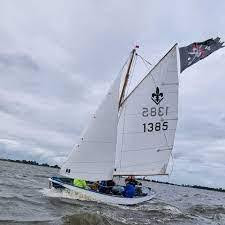

Seveningen
Al voor de oorlog zijn de Kamper Padvinders actief op het water. Vanaf 1938 verschijnt definitief de term “zeeverkenners”. Er is dan een landtak en een watertak. Er zijn steigers aan de kolk bij Seveningen, maar deze plek bevalt weinig, is vaak aan lager wal en te klein. De connecties zijn gelukkig goed waardoor de gemeente een terrein iets verderop aan het Ganzendiep ter beschikking stelt.
Pas in 1955 ontstaat de Lelievlet, de zeilboot die speciaal voor Scouting wordt bedacht en ontworpen. De Henk Brunt Groep en de Martin Gasman Groep gebruiken deze boot.

Een Lelievlet